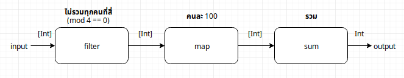

| ตอนที่ 1 | ตอนที่ 2 | ตอนที่ 3 |
TLDR: การส่งต่อข้อมูลจาก input ไป output ของโปรแกรม มีการเปลี่ยนโครงสร้างของข้อมูล การเขียนด้วยภาษาที่มีประเภทข้อมูล (type) ชัดเจน ช่วยให้เห็นการเปลี่ยนแปลงโครงสร้างนั้นได้ง่ายขึ้น
ตอนที่ 3 : Morphism
ข้อสังเกต: Morphism ในบทความนี้ใช้ในความหมายในเชิงทั่วไป ตามการตีความของผู้เขียนเพื่อให้ง่ายต่อการอธิบายต้วอย่าง ความหมายอาจแตกต่างหรือผิดเพี้ยนไปจาก Morphism (structure-preserving map) ที่นิยามไว้ใน Catagory Theory
Morphism คือการเปลี่ยนโครงสร้างจากโครงสร้างหนึ่งไปยังอีกโครงสร้างหนึ่ง ในตอนนี้จะทบทวนการเปลี่ยนโครงสร้างข้อมูลที่เกิดขึ้นในตัวอย่างโปรแกรมตอนที่ 1
จาก diagram ในตอนที่ 1 จะเห็นได้ว่าประเภท (type) หรือโครงสร้าง (structure) ของข้อมูลจาก input ไป output สามารถแยกออกได้เป็น 3 ชุดได้แก่

Unfold : Int -> [Int]
function ที่สร้าง List ของ Int จากพารามิเตอร์เดียวพบได้ในเกือบทุกภาษา
Python
ใน Python สามารถสร้าง List จาก range() generator ด้วย list comprehension ซึ่งเทียบเท่ากับ for loop
Haskell
ใน Haskell สามารถสร้าง List 1 : 2 : 3 : 4 : 5 : [] ได้ด้วย syntactic sugar [1..5] ซึ่งเรีกใช้ enumFromTo ของ Enum class
เนื่องจาก Haskell ไม่มี loop จึงไม่มีกรณีเทียบเท่าของ for loop แต่หากต้องการสร้าง List แบบแฟนซีโดยการใช้ unfoldr ซึ่งเป็น duality ของ foldr ก็ได้ดังนี้
mkList :: Int -> [Int]
mkList n = unfoldr f 1
where f :: Int -> Maybe (Int, Int)
f k | k > n = Nothing
| otherwise = Just (k, k+1)
λ> mkList 5
[1,2,3,4,5]Concept ของ unfoldr บางทีถูกเรียกว่า Anamorphism.
Transfrom : [Int] -> [Int]
map เป็น transfrom ที่จำนวนสมาชิกของ List ยังเท่าเดิม แต่ประเภทของ output อาจเปลี่ยนแปลงได้ (กรณีตัวอย่างตามตอนที่ 1 input/outpu เหมือนกัน)
Python
ใน Python สามารถเขียน map ได้หลายแบบ แต่ทีนิยมใช้มากคือเขียนด้วย list comprehension
Haskell
ใน Haskell function map อยู่ในกลุ่มของ Functor ที่มี shortcuts เป็น <$>
กรณีทั่วไปของ list จะใช้ map ใน Data.List (base library)
filter เป็น transfrom ที่ไม่เปลี่ยนประเภทของ input/output แต่จำนวนสมาชิกของ output อาจน้อยกว่าจำนวนสมาชิกของ input ได้
filter ของ Python นิยมเขียนด้วย list comprehension และ if statement, ส่วนของ Haskell มีอยู่ใน Data.List (base library)
Fold : [Int] -> Int
sum เป็น function ที่ต่างจากการเขียนการคำนวณใน loop เพียงอย่างเดียว คือต้องมีต้วเก็บค่า (accumulator) จาการทำงานของรอบที่ผ่านมา
ตัวอย่าง: sum แบบ iterative
Python
Haskell
ตัวอย่าง: sum แบบ recursive
foldr ของ Haskell นั้นรวม accumulator อยู่ในตัวแล้ว function f ที่เราส่งเข้าไปนั้น apply list ที่ fold แล้วเป็น argument
เราจึงสามารถส่ง (+) :: Int -> Int เข้าไปใน foldr และ 0 เป็นจุดเริ่มต้นเพื่อเขียน sum ได้
Concept ของ foldr บางทีถูกเรียกว่า Catamorphism.